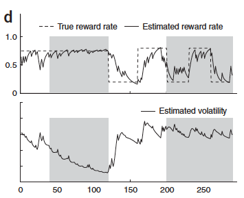

Four weeks
Week 1 — today
- Play the task yourself
- Build a learning model
- See what its parameters do
Week 2
- Utility and choice probability
- Simulations and parameter recovery
Week 3
- Fitting the model to real data
- Model comparison
- Data quality and exclusions
Week 4
- Validating the fits
- Statistics and your write-up
Why build a model?
- What models have you come across in your course so far?
- What has modelling taught us about behaviour?
- What has modelling taught us about the brain?
- What practical uses might computational models of cognition have?
Why build a model?
- To make inferences about causes of behaviour we cannot observe directly
- To infer latent variables and mechanisms
- To say something about the computations involved in a task
- To ask questions that are hard to answer with an experiment alone
- To quantify the evidence for a theory

After a slide by Wei Ji Ma's lab, NYU
Marr's three levels
Computational theory. What is the goal, and why is it the right one?
Algorithm. What representation and what procedure achieve it?
Implementation. How is that realised physically?

Two systems can share a goal and differ in algorithm, or share an algorithm and differ in hardware.
Marr & Poggio, Vision, 1982
What we are trying to model
Two questions, and the task is built to separate them.
- How do we learn, over time, which option is more likely to be rewarded?
- How do we decide between options once we have learnt that?

Two things vary, and they vary independently
Magnitude is shown. It is redrawn at random every trial.
Probability is hidden. It has to be learnt from outcomes, and it changes.
Because the two are independent, a participant who tracks only the numbers on screen behaves differently from one who also learns the probabilities — which is what makes the model identifiable.

Behrens et al., Nature Neuroscience, 2007
What we can measure, and what we cannot
Measured directly
- Which option was chosen
- Reaction time
- Points earned
Not measured
- How quickly a participant updates their beliefs
- How they trade points off against probability
- How noisy their choices are
The second list is what we actually want. A model is how we get at it — each entry becomes a parameter we can estimate.
Before you run anyone
- What makes a good testing environment?
- What would you ask a participant to check they have understood the task?
- Should the stable and volatile blocks be counterbalanced? Why?
In a real study you would brief the participant and take informed consent before any of this.
Your turn: play the task
Follow the link in Section 2 of the Colab notebook.
- Play it properly — try to earn points, not just click through.
- If you have time, restart and play the other block order.
- Pay attention to how you are deciding. You will be asked.
Roughly 30–45 minutes, then a short break.
Learning as error correction
On each trial, compare what happened with what you expected:
then move your expectation a fraction of the way towards it:
$o_t = 1$ if option 1 (green) was rewarded and $0$ if option 2 (orange) was; $p_t$ is the current estimate that option 1 will be rewarded, and $0 < \alpha \le 1$.
What the learning rate does
Drag $\alpha$ between a slow learner and a fast one. What does each one buy you, and what does it cost?
Now make the world change
- Which $\alpha$ tracks the reversals best? Which is steadiest once things settle?
- So should $\alpha$ be the same in a volatile and a stable environment?
The hypothesis this sets up
How fast we learn should depend on how fast the world is changing: a higher learning rate when outcomes are volatile, a lower one when they are stable.

We will test this in real participants in week 3, by fitting one learning rate per block and asking whether the volatile one is larger.
Behrens, T. E. J., Woolrich, M. W., Walton, M. E., & Rushworth, M. F. S. (2007). Learning the value of information in an uncertain world. Nature Neuroscience, 10(9), 1214–1221.
The model so far cannot choose
It tracks how likely option 1 is to pay out. It says nothing about the points on offer — so it cannot yet prefer one option over the other.
- Name two ways a participant might combine points and probability.
- Which is better, and better for what?
Multiplying the two
$m$ is the magnitude on offer, $p$ the learnt probability.
This is expected value. An option is worthless if either the points or the chance of winning them is near zero.
Adding the two
with magnitude rescaled to $0$–$1$, and $0 \le \omega \le 1$ setting how much weight goes on points rather than probability.
- What does $\omega = 0$ describe? And $\omega = 1$?
Two shapes, two predictions
The multiplicative surface is curved and pinned to zero along both edges. The additive surface is a tilted plane: a lot of points can compensate for a poor chance.
Which one describes real participants is an empirical question — and in week 3 we will answer it by fitting both and comparing them.
Unrolling the update
Substituting equation 2 into itself, trial after trial, gives the expectation at trial $T+1$ as a weighted sum of everything that has happened:
The influence of any one outcome decays geometrically as it recedes into the past, and the starting value $p_1$ is forgotten at the same rate.
What that weighting looks like
At $\alpha = 1$ only the last trial counts. As $\alpha$ falls the model averages over a longer and longer window — which is exactly why a low $\alpha$ is steady but slow.
Discussed in Daw & Tobler (2014), Neuroeconomics, ch. 15
Before next week
- Finish the Session 1 notebook if you have not already.
- Answer the four exercise questions and bring them to session 2.
- Try the derivation of equation 6 — we will work through it next time.
Notebook, with and without solutions: github.com/JanGrohn/ComputationalModelingBlockPractical